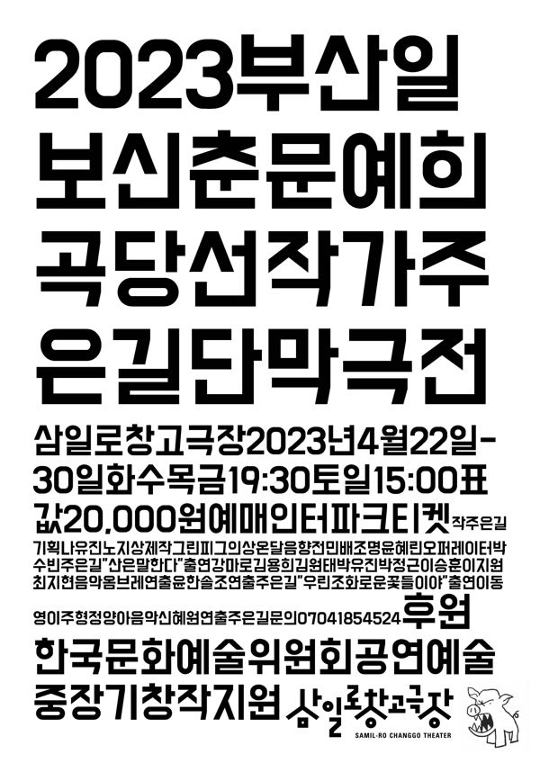

주은길 작, 윤한솔·주은길 연출

2023 부산일보 신춘문예 희곡 당선작 〈산은 말한다〉와 단편 〈우린 조화로운 꽃들이야〉를 엮은 단막극전. 〈산은 말한다〉는 서로 다른 시간의 세 산에서 결점 있는 인물들이 각자 원하는 것을 위해 움직이는 피카레스크극이고, 〈우린 조화로운 꽃들이야〉는 이별과 재회를 끝없이 반복하는 연인의 이야기다.
2023.4.22–30 / 삼일로창고극장 - 2023 부산일보 신춘문예 희곡 당선작가
작: 주은길
〈산은 말한다〉 연출: 윤한솔 (조연출 주은길)
〈산은 말한다〉 출연: 강마로, 김용희, 김원태, 박유진, 박정근, 이승훈, 이지원, 최지현
〈우린 조화로운 꽃들이야〉 연출: 주은길
〈우린 조화로운 꽃들이야〉 출연: 이동영, 이주형, 정양아
음악: 옴브레, 신혜원
의상: 온달
조명: 윤혜린
음향: 전민배
기획: 나유진, 노지상
사진: 신재환
2023.5.2 관람 후기
이전: 〈엑스트라연대기〉 | 다음: 〈발목〉
아카이브로 돌아가기
최종 수정 2026.11.9